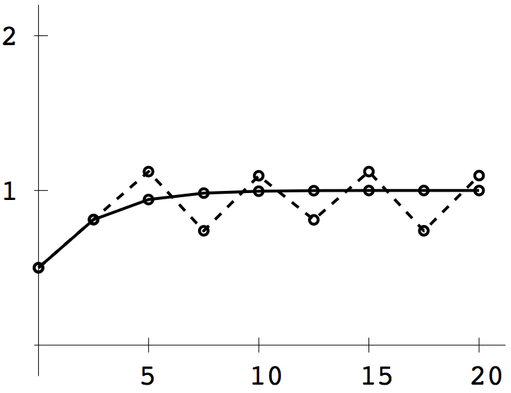
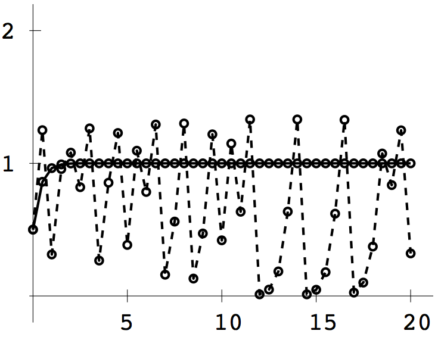

COMPUTER PROBLEMS 6.6
\(\def\ds{\displaystyle} \)
1 (a) The differential equation has equilibrium solutions,
corresponding to \(0=f(t,y)=y^2-y^3\), at \(y=0\) and \(1\).
The Backward Euler method applied to the equation is
\[ w_{i+1}=w_i+h(w_{i+1}^2-w_{i+1}^3).\]
To solve for \(w_{i+1}\) at each step, we use the Newton's Method
iteration
\begin{eqnarray*}
z_0&=&w_i\\
z_{j+1}&=&z_j-\frac{z_j-w_i-hz_j^2+hz_j^3}{1-2hz_j+3hz_j^2},
\end{eqnarray*}
setting \(w_{i+1}\) to be the last \(z_j\). The Euler method roughly
approaches the equilibrium at \(y=1\) for step sizes \(h\leq 1.8\). For \(h=2.5\),
the results of Backward Euler (solid curve) and Euler (dashed curve)
are directly compared in the plot below.

1 (b) Similar to (a). The equilibrium solutions are \(y=0\) and \(1\).
The Backward Euler method gives
\[ w_{i+1}=w_i+6h(w_{i+1}-w_{i+1}^2).\]
The Newton iteration is
\begin{eqnarray*}
z_0&=&w_i\\
z_{j+1}&=&z_j-\frac{z_j-w_i-6hz_j+6hz_j^2}{1-6h+12hz_j}.
\end{eqnarray*}
The Euler method roughly
approaches the equilibrium at \(y=1\) for step sizes \(h\leq 1/3\). For \(h=1/2\),
the results of Backward Euler (solid curve) and Euler (dashed curve)
are directly compared in the plot.
